第三卷
旅行家

卷 首 语 ： 每 一 段 旅 行 都 有 终 点
小说剧情 |
第一卷
小丑 |
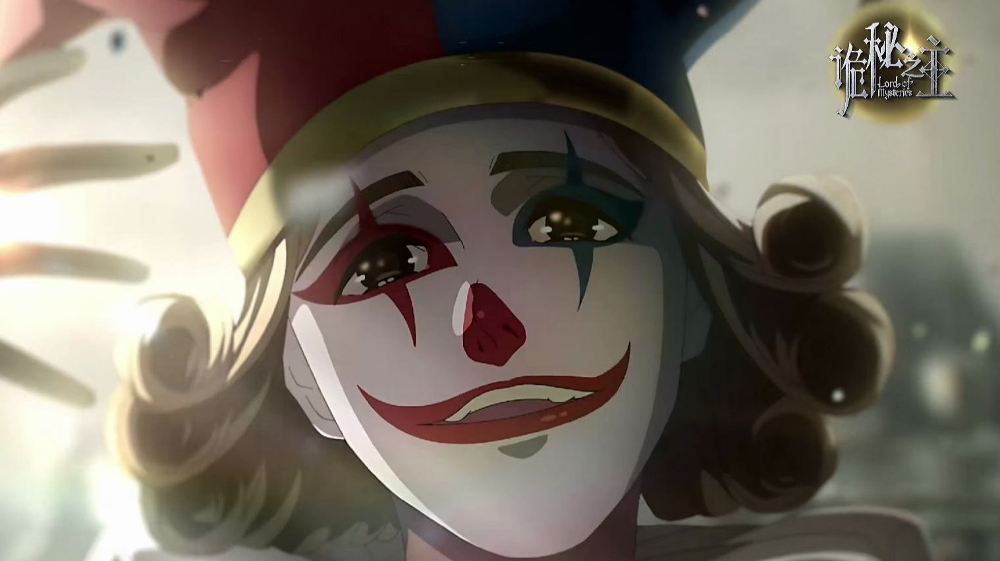 |
卷 首 语 ： 所 有 人 都 会 死 ， 包 括 我 |
|
| 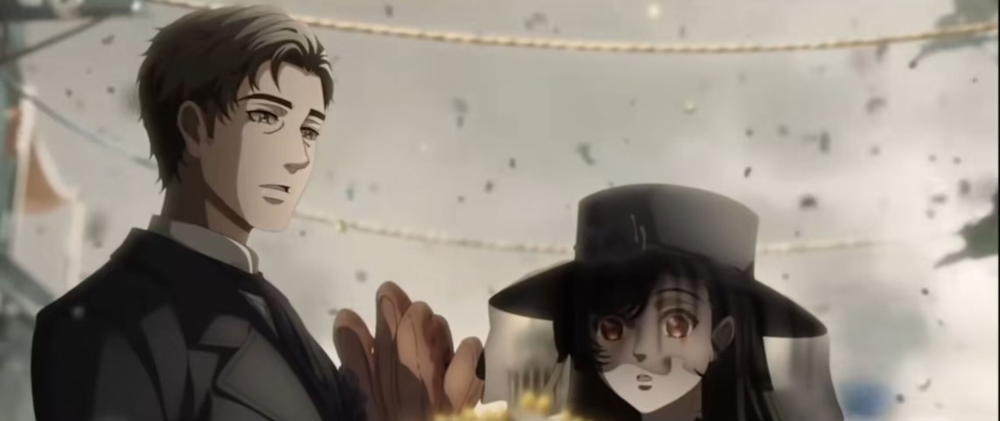 | |
| 《诡秘之主》第一卷“小丑”的情节始于现代人周明瑞穿越成为鲁恩王国廷根市的克莱恩·莫雷蒂。原主因接触安提哥努斯家族笔记离奇死亡，为调查真相并自保，克莱恩通过队长邓恩·史密斯引荐加入值夜者小队。在此他结识了引路人老尼尔——这位精通仪式魔法和基础符文的年老值夜者，在教导克莱恩神秘学知识的同时，也因沉迷复活亡妻的禁忌仪式而逐渐失控，成为克莱恩亲历的第一例非凡者失控案例。随着调查深入，克莱恩与队友伦纳德·米切尔、弗莱等人相继遭遇封印物"0-08"操控的兰尔乌斯钢铁公司诈骗案、梅高欧斯怀上邪神子嗣等连环事件。当因斯·赞格威尔携0-08引导邪神子嗣降临查尼斯门时，值夜者小队陷入苦战。最终为阻止灾难蔓延，小队在圣赛琳娜骨灰的加持下破坏邪神子嗣降生。克莱恩在抢救队长过程中被因斯赞格威尔偷袭致死。在源堡和黑夜女神的祝福下克莱恩死而复生，将队长邓恩的遗物怀表置于墓碑后，踏上前往贝克兰德的蒸汽列车。 | |
第二卷 无面人 |
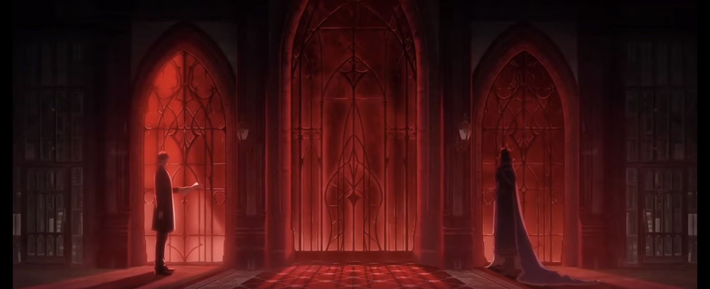 |
卷 首 语 ： 这 是 最 好 的 时 代 ， 这 是 最 坏 的 时 代 |
|
| 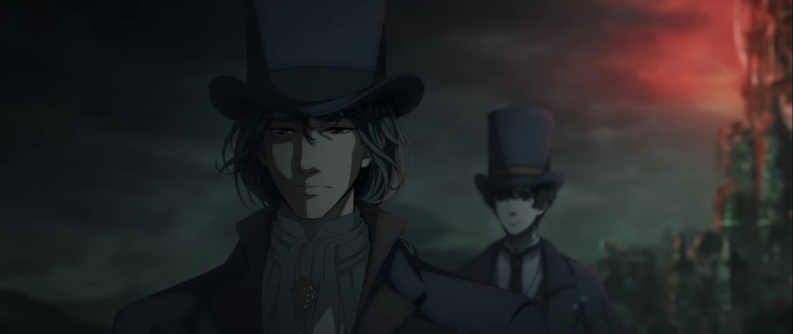 | |
| 《诡秘之主》第二卷“无面人”围绕克莱恩展开，他复活后化名夏洛克·莫里亚蒂在贝克兰德以私家侦探为业，初接委托便卷入黑帮纷争，随后通过塔罗会悬赏解决幕后问题、进入克拉格俱乐部探索隐秘地道，还找到导致昔日小队死伤的兰尔乌斯，借助正神教会力量将其击杀并完全消化小丑魔药，之后收集材料晋升序列7魔术师，拉拢佛尔思加入塔罗会，参与破获连环杀人案、帮助丰收教堂神父获取药师魔药配方，在奥黛丽协助下从“罗塞尔纪念展”偷走“亵渎之牌”黑皇帝，又因杀死人口贩子卡平被称为侠盗“黑皇帝”并总结出魔术师扮演法则，期间还占卜出恶魔途径序列5“欲望使徒”的逃走路线并借助“黑皇帝”亵渎之牌将其击杀，发现序列1“水银之蛇”转生企图后拿走相关千纸鹤，最终在极光会引发贝克兰德人造大雾霾、企图召唤邪神真实造物主时，凭借“亵渎之牌”等力量破坏仪式，阻止邪神降临，之后收集材料晋升序列6无面人并离开贝克兰德，继续其在诡秘世界的旅程。 | |
第三卷 旅行家 |
|
卷 首 语 ： 每 一 段 旅 行 都 有 终 点 |
|
| 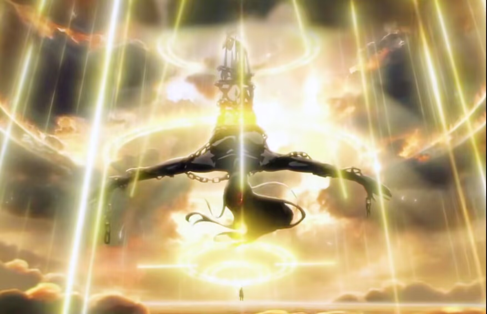 | |
| 贝克兰德事件落幕，克莱恩为晋升序列5秘偶大师，化身“格尔曼·斯帕罗”开启海上旅程，他登上白玛瑙号结识达尼兹并收为小弟，途经班西港时，为报旧情与善意冒险下船，面对风暴、吃人怪物及邪教徒复苏的活祭习俗，先救船上众人、协助船长向风暴教会报信，后风暴教会摧毁班西港，格尔曼之名初显；抵达拜亚姆后，他联合“倒吊人”阿尔杰，借无面者能力击杀海盗“钢铁麦维提”，塔罗会首次实质合作成功，同时奥黛丽在塔罗会助力下晋升序列7心理医生；后续他与“冰山中将”艾德雯娜合作，因触碰骨制匕首遭海神卡维图瓦夺舍，最终联合风暴教会击杀海神、获海神权杖与黄金酒杯，还以“惩恶扬善”喂养“蠕动的饥饿”、击杀“恶魔”吉尔希艾斯，期间假扮半身艾弥留斯险遭欲望母树捕获，又随艾德雯娜进入《格罗塞尔之书》与冰霜巨龙苦战、约定归还书中遗物；最终，在“隐者”嘉德丽雅帮助下找到美人鱼、成功晋升秘偶大师，返回鲁恩后为《格罗塞尔之书》中回归的士兵龙泽尔立碑，以“每一段旅行都有终点”的感慨为这卷海上冒险画上句点。 | |
第四卷 不死者 |
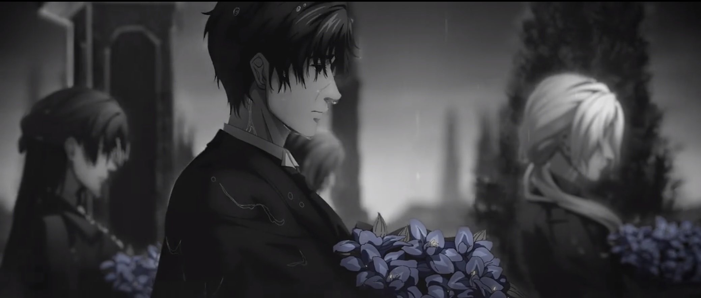 |
卷首语：不死，一个恩赐，或者，一个诅咒 |
|
| 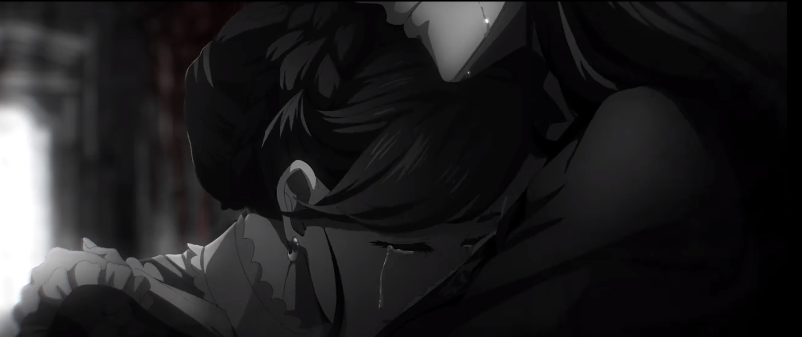 | |
| 克莱恩以富商道恩·唐泰斯的身份重回贝克兰德，目标锁定圣赛缪尔大教堂，试图从安提戈努斯家族笔记本中获取序列4诡法师魔药配方，同时暗中调查贝克兰德大雾霾的幕后黑手。他与“倒吊人”阿尔杰合作，在神秘岛屿探险时，发现远古太阳神被永恒烈阳、风暴之主、知识与智慧之神分食的壁画，还得到暴君途径的亵渎之牌。潜入大教堂封印物仓库时，被封印物0 - 17丢进迷雾小镇，在此击杀“A先生”，与占卜家序列1的查拉图斗智斗勇，虽被欺骗但最终在黑夜女神注视下成功逃脱并拿到配方。与此同时，伦纳德发现格尔曼·斯帕罗、夏洛克·莫里亚蒂与克莱恩·莫雷蒂的关联，道恩说服伦纳德，让其相信克莱恩是“愚者”信徒。军方委托道恩向南大陆售卖武器，他派达尼兹前往调查，达尼兹在南大陆与安德森相遇。得知阿蒙来到贝克兰德，克莱恩为避其锋芒前往南大陆，伦纳德和戴莉所在的红手套小队也被派往此处猎杀“灵教团”成员。在南大陆，克莱恩与阿兹克登上“黑郁金香号”，因“地狱上将”路德威尔疑似拥有与死亡有关的物品，阿兹克将其转化为克莱恩的秘偶；之后在狂暴之海，阿兹克感受到死神复活计划——人造死神的召唤，黑夜女神取走唯一性并分离阿兹克与鸟形配饰的灵魂联系，阿兹克摆脱死神影响后沉睡。因斯·赞格威尔也来到南大陆驱逐红天使恶灵，在亚当影响与帮助下，克莱恩联合伦纳德、戴莉成功复仇，击杀因斯，亚当拿走封印物0 - 08，克莱恩完成晋升仪式成为序列4诡法师，此外，克莱恩还发现灰雾之上包裹着地球人的透明蚕茧，暗示穿越者群体与末日危机，为故事发展埋下伏笔。 | |
第五卷 红祭祀 |
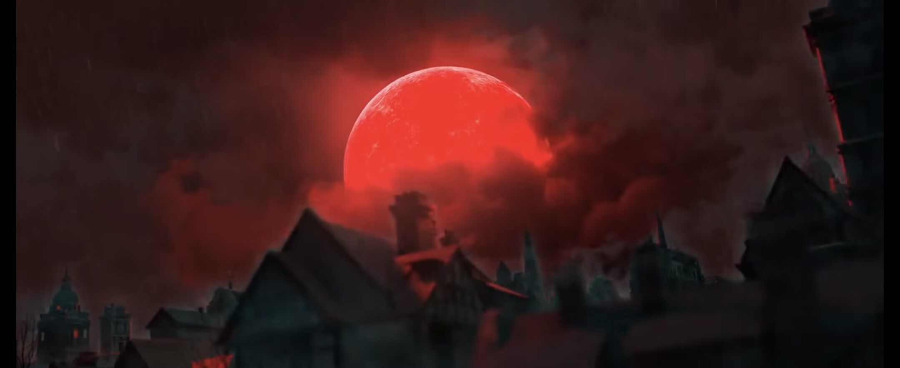 |
卷 首 语 ： 每 个 溺 水 的 人 都 会 挣 扎 |
|
| 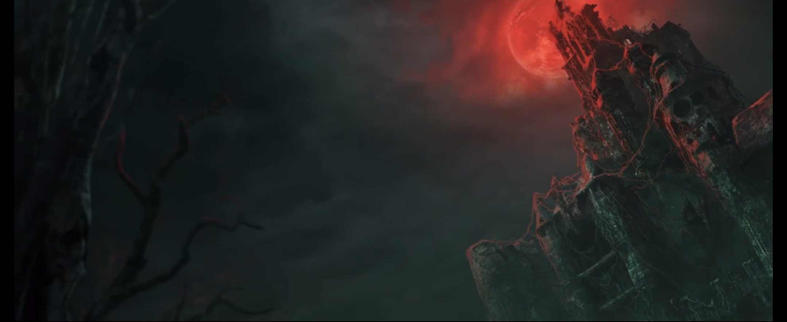 | |
| 克莱恩晋升序列4诡法师回到贝克兰德后，以道恩·唐泰斯身份，在黑夜女神、威尔·昂赛汀和帕列斯助力下清除阿蒙分身，又盯上军情九处少将副处长丘纳斯·科尔格和心理炼金会评议团委员赫温·兰比斯，调查贝克兰德大雾霾真相；他在玫歌庄园设伏，与身为黑皇帝途径序列4“堕落伯爵”、持有“光与影的协奏曲”和“里维尔的绝望嘶喊”等诡异武器的丘纳斯展开恶战，后请求黑夜女神大主教、不眠者序列2隐秘之仆阿里安娜协助，成功击杀二人，通灵得知王室和亚当关于乔治三世成神计划，还从女神处获序列3古代学者魔药配方。不久，弗萨克帝国空袭贝克兰德，战争爆发，克莱恩用“生命手杖”救治伤员，通过佛尔思小说消化“诡法师”魔药 ，前往狂暴海岛屿服下魔药晋升古代学者，却因源堡异动引来阿蒙、帕列斯、欲望母树等强者关注。随着战事推进，克莱恩知晓乔治三世企图借战时演讲举行“黑皇帝”成神仪式，考虑到国王此前勾结邪教、犯下人口贩卖与制造大雾霾等罪行，且其成神还可能影响罗塞尔复活，便联合各方在仪式现场与敌人混战，召唤蕾妮特·缇尼科尔、死亡执政官阿兹克等相助，“神秘女王”贝尔纳黛用魔法许愿灯暂时晋升序列1知识皇帝对抗威廉·奥古斯都一世，特莉丝用“昨日重现”符咒恢复原初魔女戒指并迎接其降临，最终天使混战致陵寝崩塌，乔治三世晋升失败失控，死于风暴之主闪电下。克莱恩逃亡时先遭查拉图拦截，后躲入《格罗塞尔之书》又被亚当放逐，幸得阿里安娜帮助回到旅馆，却仍被阿蒙分身抓获，阿蒙欲借他夺取“源堡”，他以自杀复活逃脱，后投影重回神弃之地寻找乌黯魔狼和序列2“奇迹师”材料 。 | |
第六章 逐光者 |
 |
卷 首 语 ： 光 就 是 一 切 意 义 |
|
 |
在《诡秘之主》第六卷《逐光者》中，克莱恩被阿蒙抓住带去神弃之地，阿蒙一心想从他手中夺取源堡，这源堡可是晋升旧日的关键，克莱恩自然不会轻易就范。在被阿蒙深度控制的艰难处境下，他佯装配合，将阿蒙当成获取知识的宝库，打听各种隐秘，努力消化古代学者魔药。到了神弃之地的切尔诺贝利，克莱恩震惊发现这世界竟是未来地球，而他也成功消化魔药，与源堡联系更为紧密。之后，他借助黑夜女神阻拦阿蒙的时机，回到源堡“自杀”，成功摆脱控制。恢复自由的克莱恩占卜出序列2奇迹师魔药配方，主要材料来自乌黯魔狼，同时决定帮助白银城逃离神弃之地。在神弃之地的探索中，他来到月城，知晓了这里看守灰白雾气三千多年的秘密，且这雾气与序列1诡秘侍者非凡特性有关。另一边，贝克兰德战争爆发，平民生活艰难，正义小姐奥黛丽晋升序列4操控师后发起大游行，迫使贵族交出粮食，后又在神战中以半神实力对抗敌军。克莱恩在神弃之地与乌黯魔狼展开激战，凭借充分准备和强大技能“列奥德罗”，成功狩猎乌黯魔狼，获得神秘幕布，可幕布中传出真实造物主的气息，预示着新危机的降临 。 |
第七卷 倒吊人 |
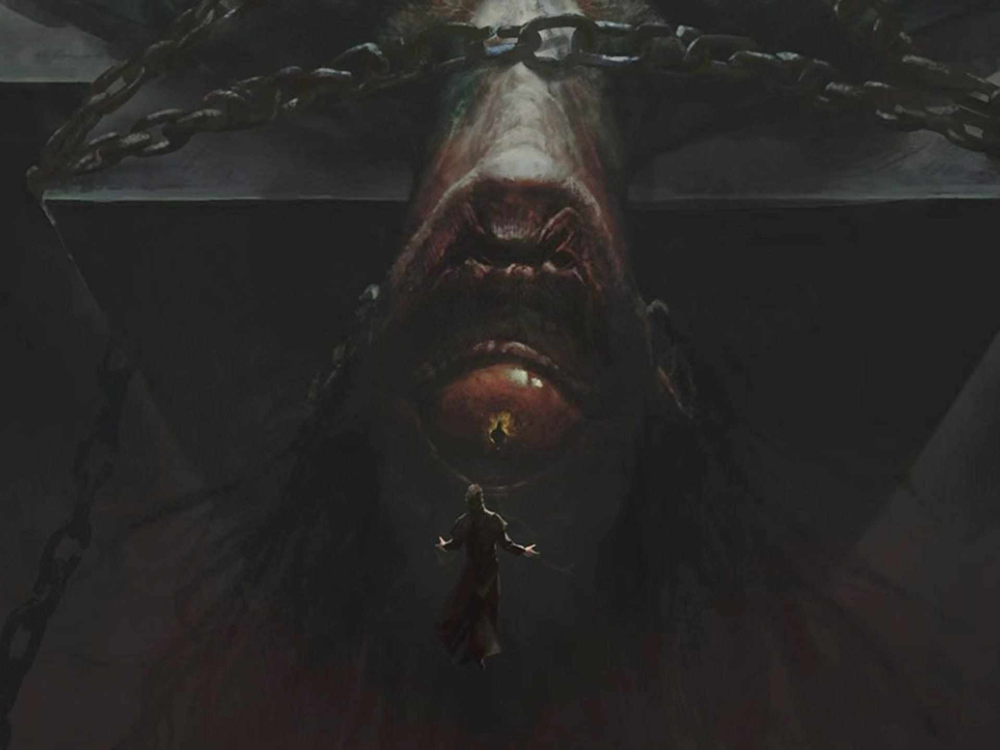 |
卷 首 语 ： 万 物 皆 有 神 性 |
|
 |
《诡秘之主》第七卷“倒吊人”中，克莱恩派遣达尼兹驾船接出白银城小队，因完成神弃之地的奇迹，成功晋升序列2奇迹师，跻身天使位阶。为躲避阿蒙的追杀，他带着魔镜阿罗德斯开启流浪生涯，期间他以梅林·赫尔墨斯的身份，扮演奇迹师帮助人们重建战时损毁的房屋。在康斯顿城，克莱恩遭遇特伦索斯特黄铜书封城危机，他巧妙布局，利用规则漏洞将其封印到霍纳奇斯山脉废弃宫殿，还意外获得了珍贵的愚者牌。与此同时，贝娜黛特探索雾海无名岛，进入罗塞尔大帝的最后陵墓，了解到父亲被堕落母神腐蚀的真相，她借助愚者的帮助，用苍白之死的符号封印了罗塞尔，而克莱恩通过历史投影与罗塞尔相见，知晓了罗塞尔的现状以及亵渎之牌的危险，并承诺成为旧日之后拯救罗塞尔。为晋升序列1，克莱恩精心构建秘偶城镇乌托邦，他的本体隐匿于圣阿莉安娜大教堂之下，操控着每一个秘偶。然而，查拉图在亚当的协助下潜入乌托邦，利用威廉·奥古斯都的历史投影将克莱恩与源堡隔绝，一场关乎命运与力量的终极对决就此拉开帷幕，各方势力在这场角逐中倾尽所能，他们的每一次抉择都充满了牺牲与代价 ，正如“倒吊人”塔罗牌所寓意的那般 。 |
第八卷 愚者 |
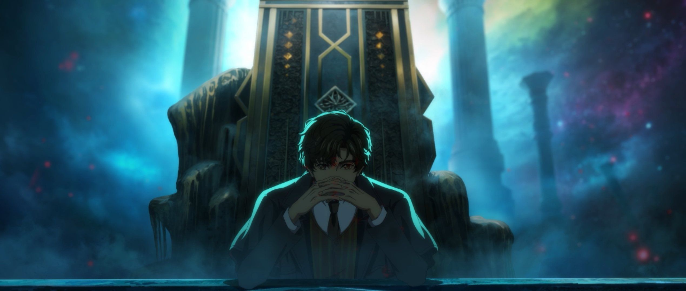 |
卷 首 语 ： 总 有 些 事 物 高 于 其 他 |
|
 |
在《诡秘之主》第八卷《愚者》中，克莱恩晋升为序列1“诡秘侍者”后，虽成功压制住体内“福生玄黄天尊”的意志，但面对已成真神的阿蒙，依旧压力巨大，只有尽快成为序列0“愚者”，凭借“源堡”和位格才能与之抗衡 。他向黑夜女神求助，女神答应帮忙。准备晋升期间，克莱恩与亲朋好友一一告别，还赠予“正义”小姐奥黛丽序列3魔药及配方，灭掉心理炼金会潜在威胁 。黑夜女神询问他是否确定要走这条艰难道路，成为旧日，克莱恩考虑到阿蒙的不可信及众多帮助过自己的人，毅然决定晋升 。融合“愚者”唯一性时，阿蒙趁机窃取他的锚，在“福生玄黄天尊”和安提哥努斯意志的冲击下，克莱恩意识飘摇，好在信徒们的祈祷支撑着他。众神相继出手，克莱恩最终喝下愚者魔药，成功晋升为序列0“愚者” 。然而，“福生玄黄天尊”意志进一步苏醒，阿蒙又闯入“源堡”，战斗中克莱恩不敌阿蒙，危急时刻，他放任体内“天尊”意志苏醒，以疯狂的姿态让阿蒙畏惧，成功击败阿蒙，阿蒙本体陨落 。但克莱恩也难以压制“天尊”意志，无奈选择与“诡秘之主”一同沉眠 。沉眠前，他找到“水银之蛇”威尔，想帮其容纳唯一性被拒 ，随后回到“源堡”举行最后一次塔罗聚会，告知成员自己将沉眠，并委托他们宣扬自己的名，留下“‘世界’醒，‘愚者’归”的话语 。之后，克莱恩带着“魔镜”阿罗德斯走进光门后的青黑雾气，就此沉睡，塔罗会其他成员则各自走向新的命运 。 |